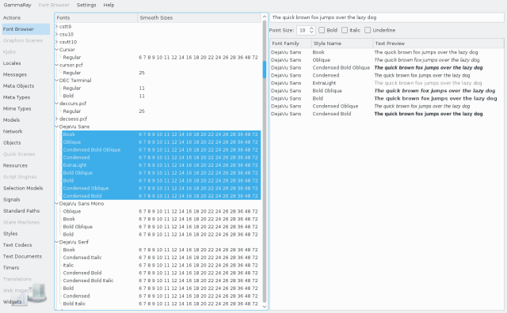

The font browser allows you to inspect the fonts accessible to QFontDatabase inside your target application.

The tree view on the left side shows all font families and their corresponding styles found on the target system, or manually made available to QFontDatabase, as well as their supported sizes.
The right side shows a preview of the fonts selected in the font tree, for the given sample text and font properties. The preview is rendered on the target system, that is, you see the result from a remote embedded system here if that is your target.